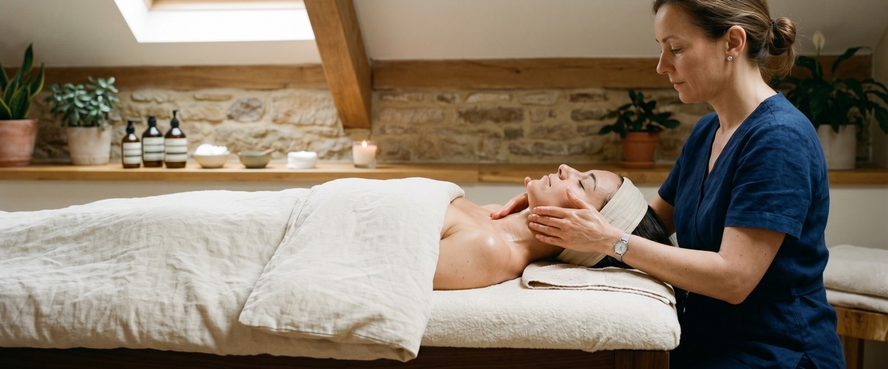
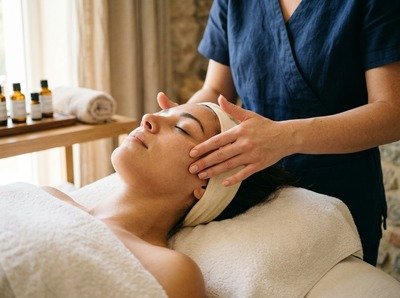

If tension settles in your face, jaw, or neck, or your skin feels dull and your head feels heavy, a Thai Facial Massage at Thai Massage Greenock addresses all of it at once.

This tailored facial treatment targets the face, head, and neck together, combining therapeutic massage with skin-focused care that is personalised to how you arrive on the day.
Thai Facial Massage draws on acupressure, lymphatic drainage strokes, and targeted pressure along the face and scalp. It works at a deeper level than a standard facial.

Jariya adapts every session to what your skin and muscles need: whether that is releasing jaw tension, easing sinus pressure, improving skin tone, or simply helping you decompress. No two sessions are identical because no two clients arrive in the same condition.
You can book your tailored facial treatment online and choose a session length that suits you.
This treatment suits anyone who carries stress in their face or head. Office workers and screen-heavy professionals often develop chronic jaw clenching, furrowed foreheads, and neck stiffness that a facial massage addresses directly.
It is also a strong choice for anyone dealing with tension headaches, sinus congestion, or skin that looks tired despite a good routine. If you have been considering a facial treatment in Greenock but want something more therapeutic than a beauty-only approach, this is it.
Sessions typically run 30 to 60 minutes. Jariya will take a brief note of how you are feeling before starting: where you are carrying tension, any skin sensitivities, and what you want to get out of the treatment.
You remain clothed and comfortable throughout. The session moves through the neck and shoulders first, working upward through the face, temples, and scalp using acupressure, gentle kneading, and drainage strokes.
Afterwards, most clients describe feeling lighter, with reduced facial tightness and a visible lift in how their skin looks. Some notice immediate improvement in skin tone and texture.
You may feel deeply relaxed, so allow a little time before rushing back into a busy day. Book a session online to experience it for yourself.
Thai Massage Greenock is a therapist-led studio on South Street in Greenock. Jariya trained at Bangkok's Wat Po temple, the home of traditional Thai massage, and brings that depth of knowledge to every treatment.
Her approach is never scripted: she reads what your body needs and builds on previous sessions for clients who visit regularly. If you are coming from Gourock, Port Glasgow, or elsewhere in Inverclyde, you can also explore our full range of treatments including Thai Aromatherapy Massage and Thai Foot Massage.
No. You remain fully clothed throughout the session. Jariya works on the face, head, neck, and upper shoulders, so there is no need to undress. Wear something comfortable around the collar and neck area so the upper shoulder work is unrestricted.
Sessions are available in 30 or 60 minute options. A 30-minute session focuses on the face, scalp, and neck. A 60-minute session allows time to work through the shoulders and upper back as well, which makes a meaningful difference if you carry tension in those areas.
Most clients notice improved skin tone and a reduction in puffiness immediately after the session. The lymphatic drainage techniques used during a Thai facial massage help move fluid that causes facial heaviness, and increased circulation gives the skin a healthier, brighter appearance. You may also feel deeply relaxed and a little sleepy.
For general maintenance and stress relief, once or twice a month works well for most people. If you are dealing with chronic jaw tension, tension headaches, or persistent puffiness, more frequent sessions in the early weeks can help reset the pattern. Jariya keeps treatment notes and will advise based on how your face responds.
A standard beauty facial focuses primarily on skincare: cleansing, exfoliation, and product application. Thai Facial Massage, a technique rooted in traditional Thai bodywork, prioritises the muscles, pressure points, and energy pathways of the face and head.
The result is therapeutic as well as cosmetic: tension is released, circulation is improved, and the nervous system is genuinely settled. Think of it as a massage treatment that also benefits the skin, rather than a skincare treatment with a brief massage element.
Yes. Jariya assesses your skin before every session and adapts the treatment accordingly. If you have sensitive skin, reactive conditions, or any current breakouts, let her know at the start and she will adjust the pressure, technique, and any oils used. The goal is always a treatment that works for your skin on that specific day.